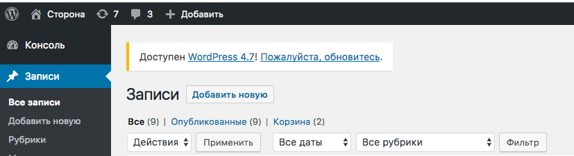
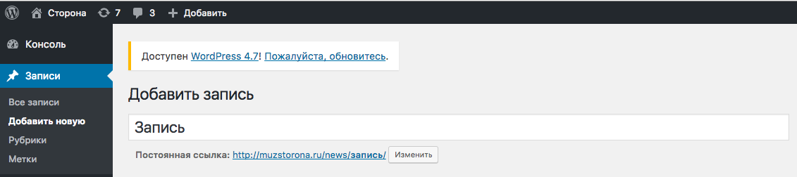
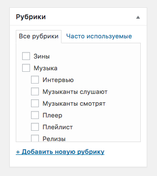
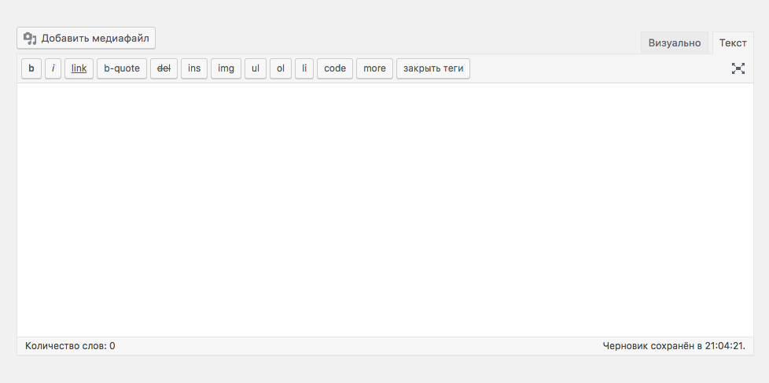
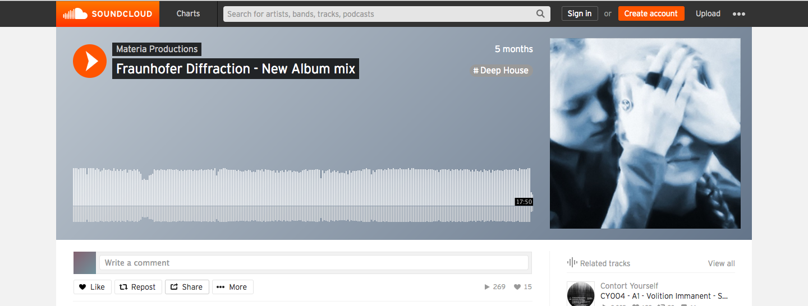
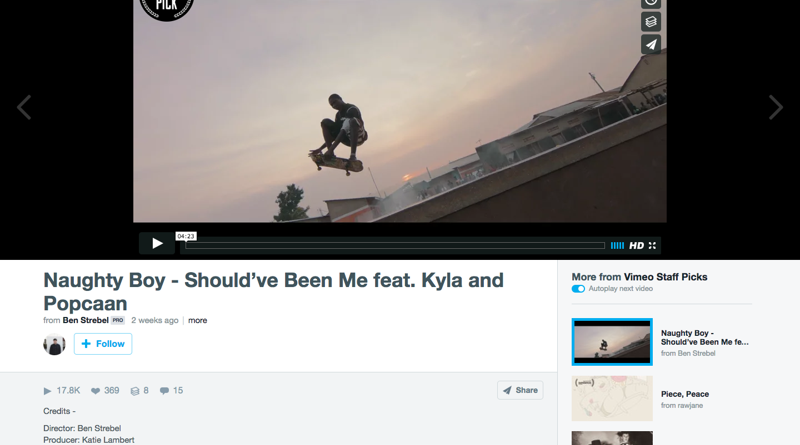
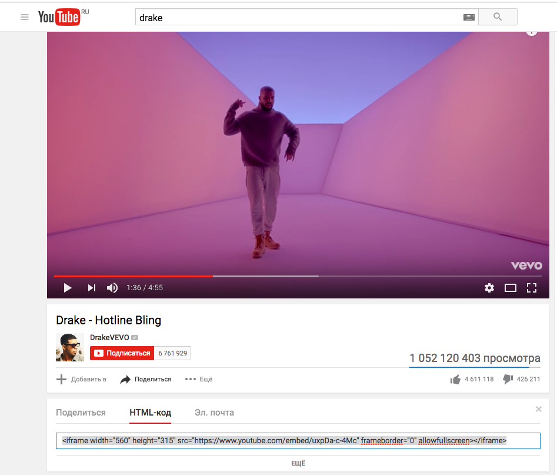
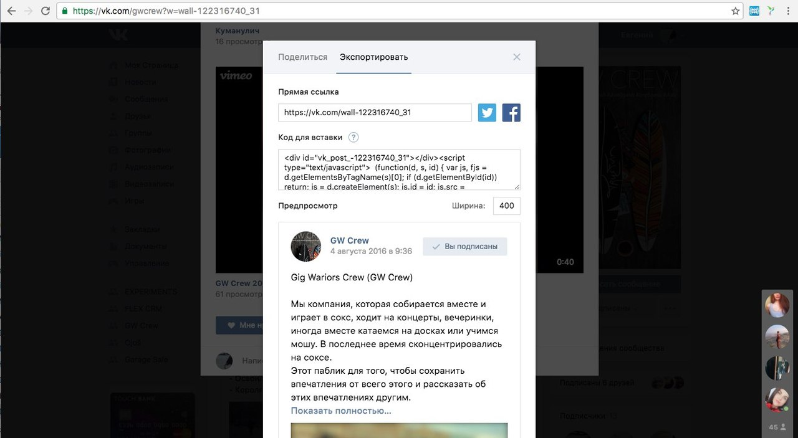

Вход
Страница для входа —
http://muzstorona.ru/wp-admin
Логин —
storona
Пароль —
gdPx7eKKBNyDMON$Kn
Можно входить через социальные сети. Но роль такого нового пользователя не позволяет ничего редактировать. Чтобы дать права новому пользователю нужно зайти из под учётной записи storona в меню Пользователи выбрать нужного и в списке Роль выбрать Редактор. Теперь человек, который будет заходить через эту учётную запись может создавать записи.

Создание записи
Меню Записи и далее Добавить новую
После задания заголовка можно задать ссылку на страницу, это поле появится под заголовком. Желательно на латинице.
Первым делом выбрираем рубрику, от этого зависят поля, которые нужно будет заполнить.
Если это статья, то появится шаблон заполнения шапки статьи. Там задаётся заголовок и фоновая каринка.
Ниже редактор, куда нужно будет вставлять блоки. Об этом подробнее в разделе Стили для статьи. Важно, чтобы всегда редактор был в режиме Текст.
Вставка из сторонних ресурсов
Можно вставлять видео или аудио из любого источника, где есть возможность вставки на сторонний сайт. Чаще всего это кнопки share и внутри embed.
У любой сссылки такого вида будут два параметра width — ширина и height — высота. Их значения можно менять. Значения в пикселях.
  Чтобы вставлять из vk, нужно завести отдельную группу, где на стене будут создаваться посты с подобрками аудио. Далле при клике на Поделиться выбираем Экспортировать и копируем ссылку в нужное место страницы.
Оформление превью
Тип превью — это то, что будет отображаться в карточке на главной странице.
Черное — полупрозрачный черный фон и белая крупная надпись;
Белыое — белый фон и черный мелкий текст;
Нет —отсутствие надписи на превью.
Публикация
Чтобы запись стала доступа для читателя нужно нажать Опубликовать. Если просто нажать Сохранить, то запись останется в черновиках, но её можно посмотерть нажав Просмотреть. Если нажать на календарь, то можно выбрать дату публикации.